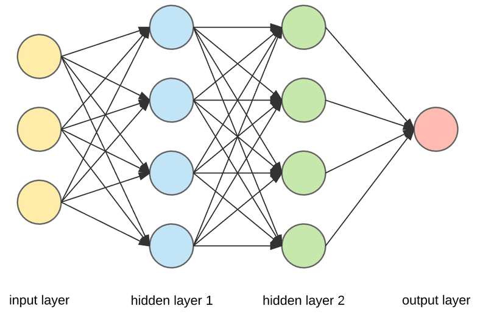
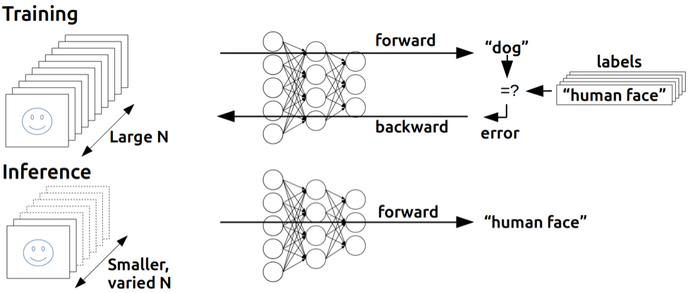
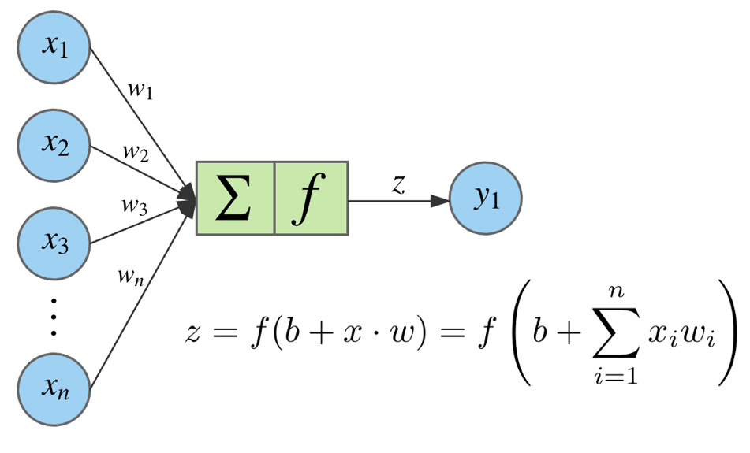
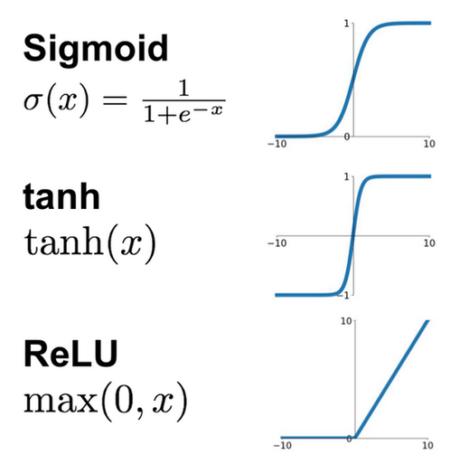
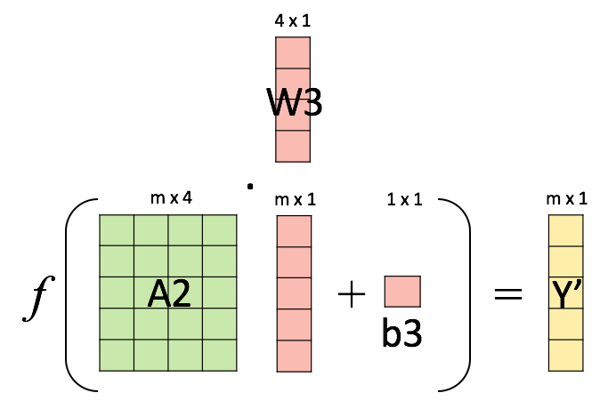

ML Algorithms: Neural Networks
Ecole Nationale Supérieure de Cognitique

Summary
- Introducing Neural Networks
- Neural Network Tuning
Introducing Neural Networks
The origins
- 1943 : first mathematical model of a biological neuron (McCulloch & Pitts)
- 1949 : Hebb’s rule
- 1958 : The perceptron (F. Rosenblatt)
- 1969 : Limits of perceptrons (M. Minsky)
A biological inspiration

McCulloch & Pitts’ formal neuron

Hebb’s rule
Attempt to explain synaptic plasticity, the adaptation of brain neurons during the learning process.
“The general idea is an old one, that any two cells or systems of cells that are repeatedly active at the same time will tend to become ‘associated’ so that activity in one facilitates activity in the other.”
Franck Rosenblatt’s perceptron

The perceptron learning algorithm
- Init randomly the
$ \omega $connection weights - For each training sample
$ x^{(i)} $:- Compute the perceptron output
$ y'^{(i)} $ - Adjust weights :
$ \omega_{next} = \omega + \eta (y^{(i)} - y'^{(i)}) x^{(i)} $
- Compute the perceptron output
MultiLayer Perceptron (MLP)

Minsky’s critic
One perceptron cannot learn non-linearly separable functions.

At the time, no learning algorithm existed for training the hidden layers of a MLP.
Decisive breakthroughs
- 1974 : Backpropagation theory (P. Werbos)
- 1986 : Learning through backpropagation (Rumelhart, Hinton, Williams)
- 1989 : Universal approximation theorem (Hornik, Stinchcombe, White)
- 1989 : first researchs on deep neural nets (LeCun, Bengio)
The deep learning tsunami
- 2012 : AlexNet (Krizhevsky, Sutskever, Hinton) wins the ImageNet competition
- 2016 : AlphaGo (DeepMind) beats Go master Lee Sedol by 4 victories to 1
- 2017 : AlphaZero reaches a surhuman level at Go and chess in less than 24h hours
- …
Anatomy of a network

Learning algorithm
Training and inference

Neuron output

Activation functions
They must be non-linear

Weights initialization
To facilitate training, they must be:
- Non-zero
- Random
- Have small values
Vectorization of computations

Layer 1 output

Layer 2 output
Layer 3 output

Weights update
Objective: minimize the loss function
Method : gradient descent
$$\theta_{next} = \theta - \eta\nabla_{\theta}\mathcal{L}(\theta)$$
Backpropagation
Objective: compute the loss function gradient wrt all its parameters (the network weights).
Method: apply the chain rule to compute partial derivatives backwards, starting from the current output.
Demo time!
Neural Network Tuning
Hyperparameters choice
- Number of layers
- Number of neurons on hidden layers
- activation functions
- Learning rate
- Mini-batch size
- …
(Iterative process)
Gradient Descent optimization
Momentum
Increase the descent speed in the direction of the minimum.
Image: a ball rolling down on a hill.
Other techniques
- RMSprop (Root Mean Square Prop) : use the previous gradients to update the learning rate.
- Adam (Adaptive Moment Estimation) : combines Momentum and RMSprop
Optimization/generalization
Tackle underfitting:
- Use a more complex network
- Train the network longer
Tackle overfitting:
- Use more training data
- Limit the network size
- Introduce regularization
- Introduce dropout
Regularization
Limit weights values by adding a penalty to the loss function.
- L1 :
$ \frac{\lambda}{m} {\sum |{\theta_{ij}}|} $ - L2 :
$ \frac{\lambda}{m} {\sum {\theta_{ij}}^2} $
$ \lambda $ is called regularization rate.
# Add L2 regularization to a layer
model.add(Dense(16, kernel_regularizer=regularizers.l2(0.001),
activation='relu', input_shape=(10000,)))
Dropout
During training, some weights are randomly set to 0. The network must adapt and become more generic.
# Add a layer with 50% dropout during training
model.add(Dense(16, activation='relu', input_shape=(10000,)))
model.add(Dropout(0.5))